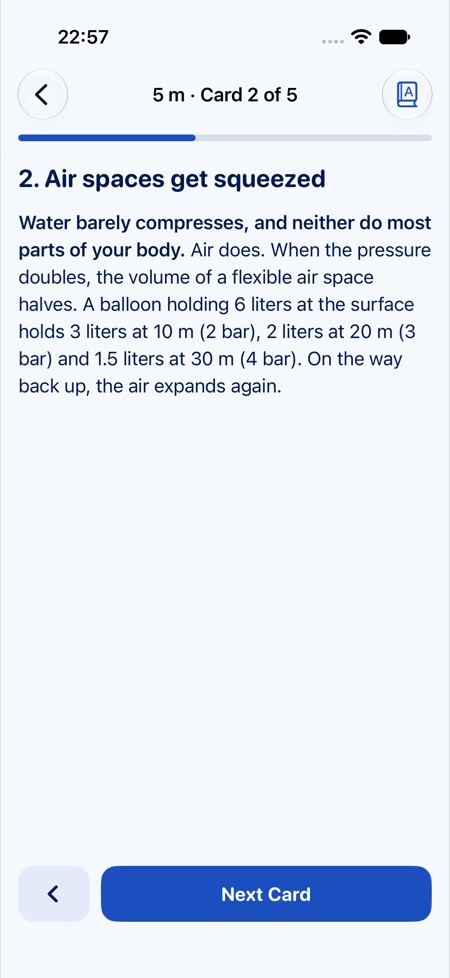
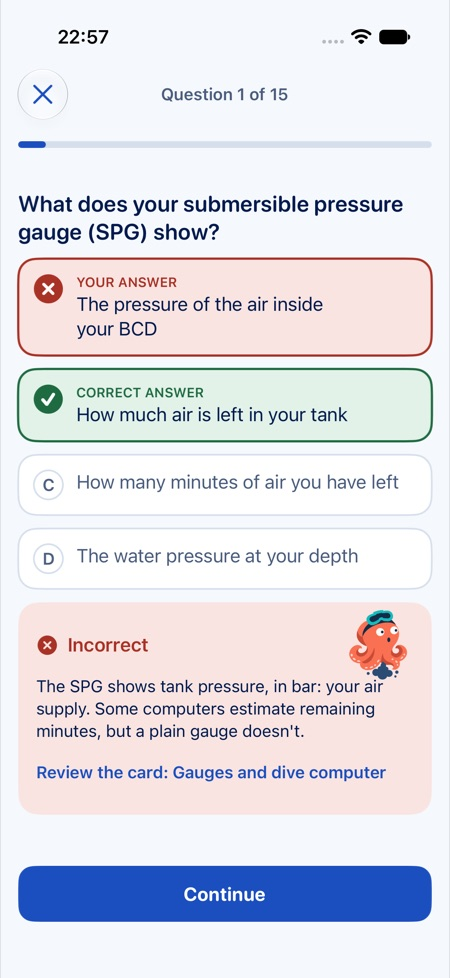
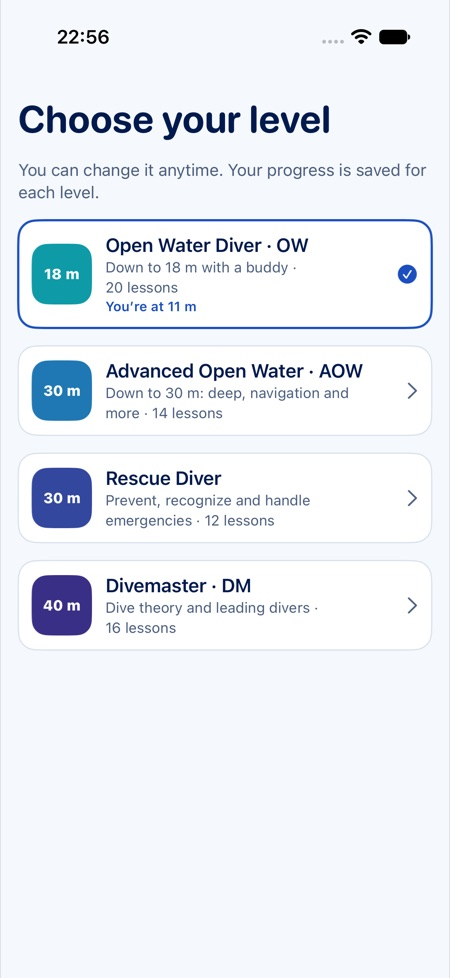
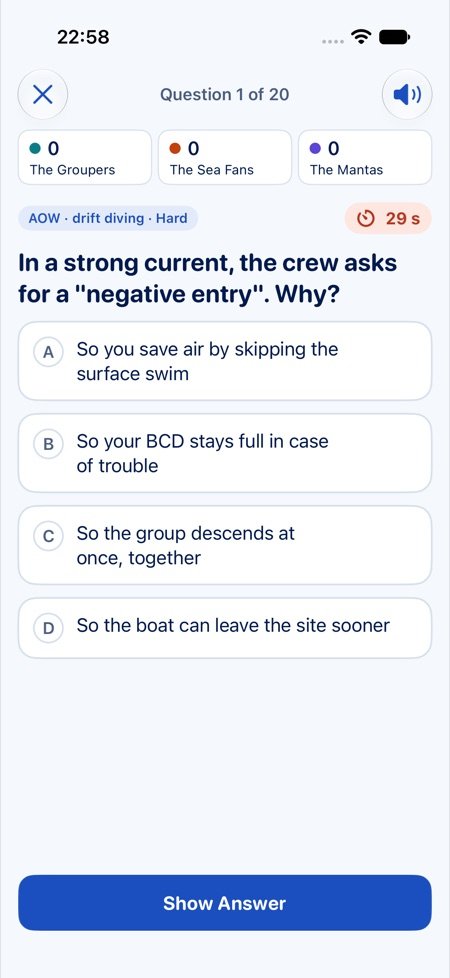

How Octo works
Each level is split into 3- to 6-minute lessons, each followed by a six-question quiz with answers. Questions you miss come back in today’s review, then at longer and longer intervals.
Short lessons
One key idea, a few cards and three takeaways, with diagrams for pressure, air consumption, partial pressures and the dive profile.
Quizzes that explain
The right answer, why, and the card to reread. Key safety questions are marked and come back more often.
Meters or feet
Meters and bar, or feet and psi. Octo picks your region’s units and you can switch at any time.
From Open Water to Divemaster
62 lessons, 372 questions and 130 exam scenarios. The lessons cover the topics of the PADI Open Water Diver, Advanced Open Water, Rescue Diver and Divemaster courses. They were written for Octo from public course outlines and diving safety references, and checked against public sources; they have not yet been reviewed by an instructor.




Meet Octo
An octopus with its mask pushed up on its head. Calm while you learn, curious when you don’t know, a little puff of ink when you get it wrong, and flames in its eyes for a perfect score.
The Mega Quiz, for dive club nights Octo Pro
300 questions from Open Water to Divemaster, plus marine life, dive sites and diving history. 1 to 4 teams, 10, 20 or 30 questions, optional 30-second timer. Show the question on the club’s TV, reveal the answer and tick the teams that got it; Octo keeps score and shows the podium. Included in Octo Pro.

Questions
Is Octo an official PADI app?
No. Octo is an independent app, not affiliated with or endorsed by PADI. It doesn’t replace your instructor or your training in the water: when in doubt, your instructor’s word comes first.
Do I need an account?
No. Your progress stays on your iPhone, with no account and no server.
Is Octo free?
Yes: lessons, quizzes, reviews and practice exams are free, with a banner ad that never appears during a question. Octo Pro (one-time purchase) adds the Mega Quiz and removes all ads.
Which languages?
English and French. Octo follows your iPhone’s language.